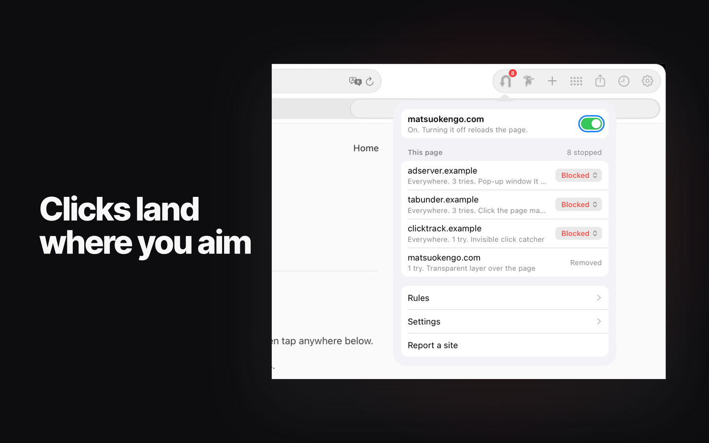
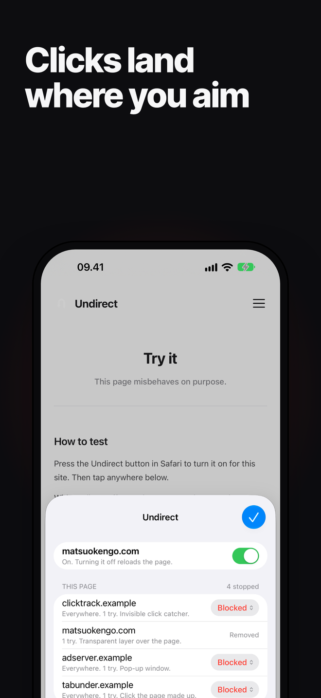
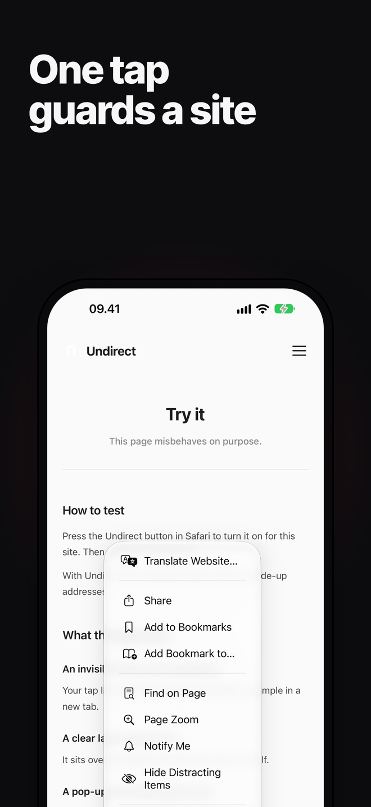

Undirect
A Safari extension for Mac, iPhone and iPad that stops pages taking your click. It clears the invisible layers that open ads in a new tab, and it lists every site a page tried to send you to.
The Idea
Pop networks do not wait for anyone to click their ad. They lay a transparent layer over the page and take your next press, or they build a link and click it themselves, or they send the tab you were reading somewhere else while a new tab opens on the page you asked for.
I read the code of two of these networks before writing any of my own. Their function names describe each trick: a full-page form with no colour, a link clicked from inside their own handler, a check for whether you pressed something that was not a link.
How You Use It
Press the Undirect button on a site that plays these tricks, and the guard turns on for that site and reloads the page. It stays off everywhere else until you press it there too. An earlier version judged every site on its own, misread one popup, and blocked microsoft.com everywhere.
On a guarded site the same button shows what the page reached for and what was stopped. On the Mac it also answers on a tab with no site, such as the Start Page, by saying where it works.
How It Works
One half runs beside the page and removes click catchers while your pointer is still moving, so the press lands where you aimed. When the press itself had to clear one, the click is passed on to what you meant. The other half runs inside the page, where a new window is requested. It lets through a window opened at a set size, which is how sign-ins and share sheets open, and stops a bare new tab to another site.
Some pops leave by the same tab. The extension watches navigations, and when the tab heads to another site a moment after you pressed something else, it stops the trip and brings you back. Anything caught becomes a network rule, so the next attempt never loads.
You Decide
Every site a page reaches for gets a row, stopped or not, and each can be allowed or blocked on that site or everywhere. A site you have not decided on is blocked until you say otherwise. The Mac app edits the rules, and the iPhone and iPad app shows them.
Privacy
Nothing leaves the device. There is no account, no analytics and no server. The list lives in Safari, and the app reads a copy of it from a folder the two share on the same device.
Built With
Swift and SwiftUI for the app, and a Safari web extension in plain JavaScript with no dependencies. Blocking uses Safari's declarative network rules, so the extension never reads the traffic it stops.
A browser test page reproduces each trick and checks that the guard undoes it.
Availability
In App Store review for macOS and iOS, September 2026. The source is public.


